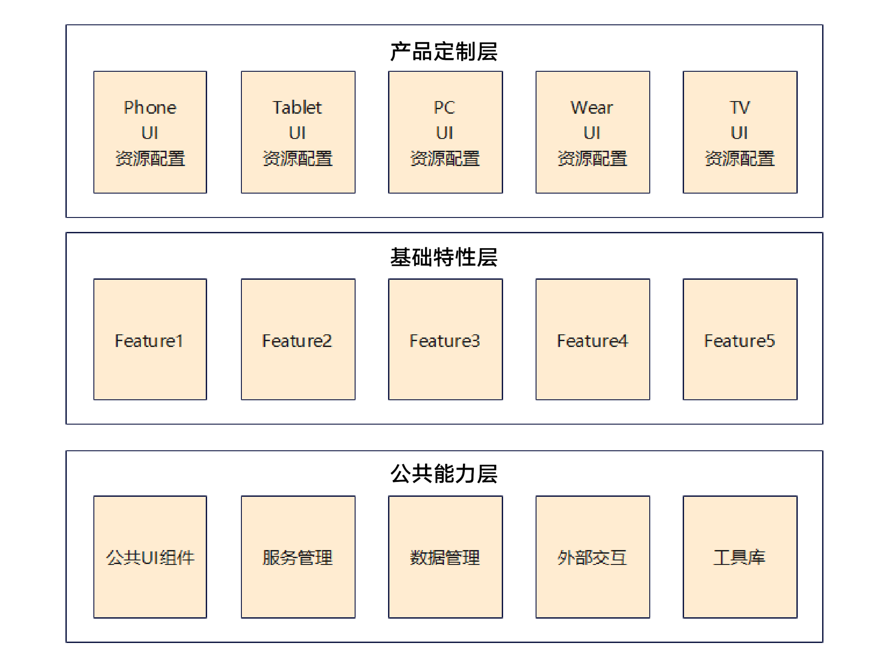
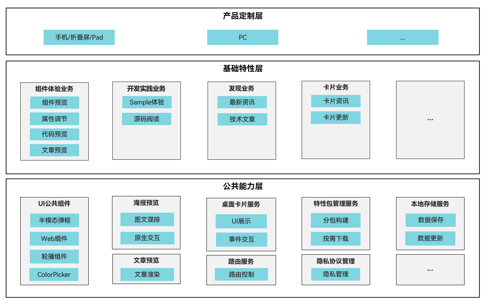
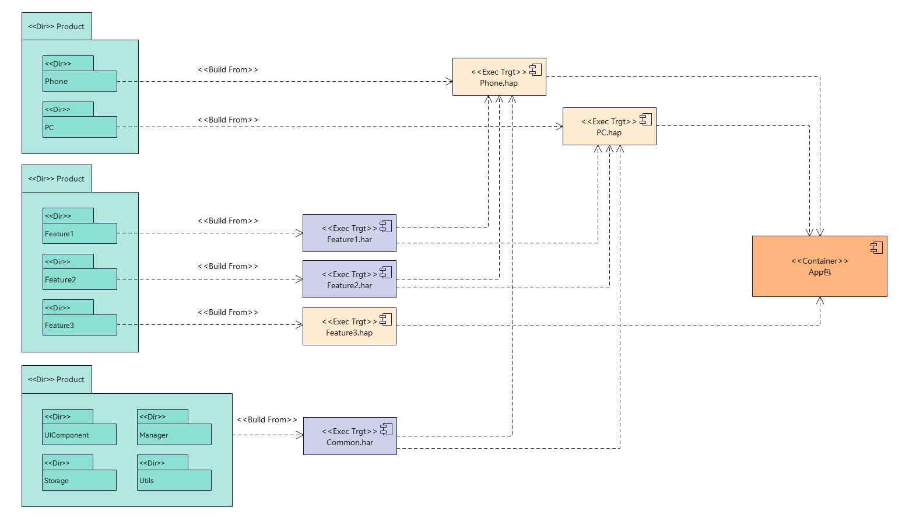
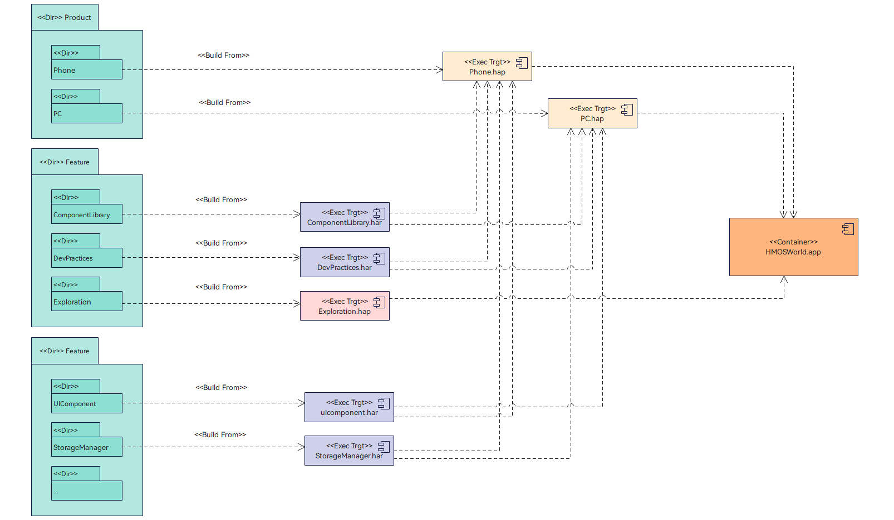
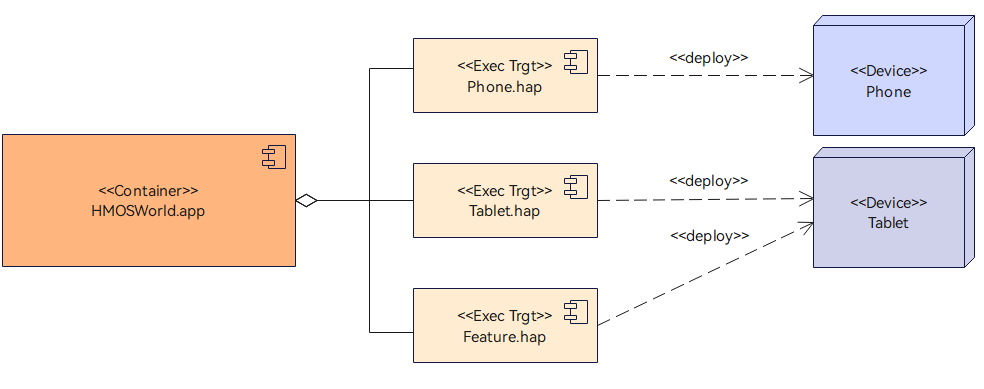
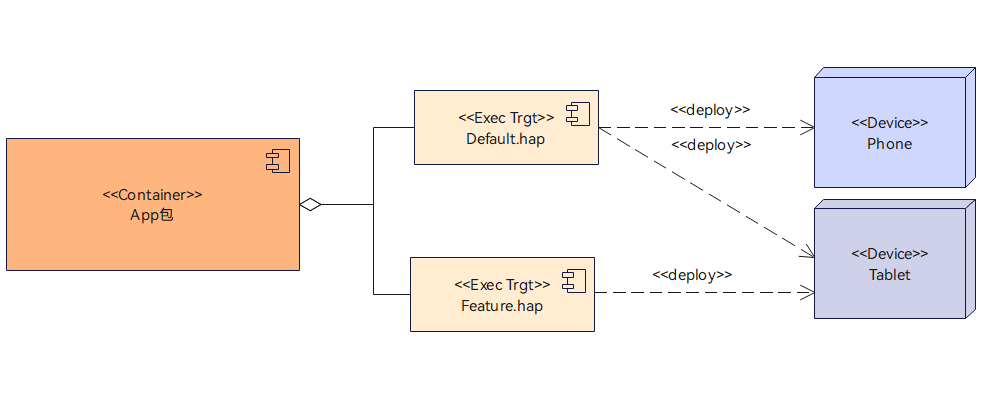
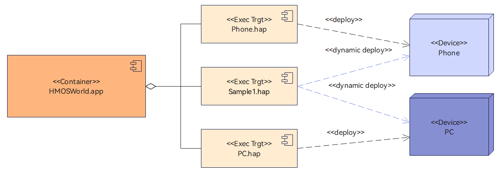

1 Layered Architecture Design
1.1 Overview
The layered architecture design of the HarmonyOS Code Workshop is intended to build deliverables for 1+8 devices such as phones and tablets from a single code project, realizing the HarmonyOS application concept of “develop once, deploy on multiple devices”.
This article explains the rules and practices of the three-layer architecture for HarmonyOS applications from the perspectives of application design, development, and deployment in the HarmonyOS Code Workshop.
1.2 Design - Logical Model
1.2.1 Design Principles
A typical HarmonyOS application layered architecture mainly consists of the product customization layer, basic features layer, and common capabilities layer. This layered design creates a clear, efficient, and extensible architecture. The three-layer application architecture is shown below:

- Products layer (product customization layer): Contains device-specific business logic, such as UI, resources, and configuration. It is decoupled from the application foundation. Products cannot depend on one another horizontally, and depend downward on the Features and Common layers.
- Features layer (basic features layer): Refers to a collection of abstract application features. Each Feature is highly cohesive, loosely coupled, and customizable for flexible product deployment. It can be depended on by HAPs for different device types in the Products layer, but cannot depend back on the Products layer. Features can depend downward on the Common layer.
- Common layer (common capabilities layer): Refers to the set of foundational capabilities and is the minimum system set. Common business capabilities contained in each Feature can be moved down to the Common layer. This layer can only be depended on by the Products and Features layers and cannot depend back on them.
The layered design divides code according to functional responsibilities, with each layer focusing on its own responsibilities. This improves maintainability, extensibility, and code reuse. The advantages are as follows:
- Decoupling: Minimize dependencies between modules to reduce coupling.
- Reuse: Common capabilities can be reused by multiple modules, avoiding duplicate development.
- Clarity: Clear layer separation makes the project structure easy to understand.
- Extensibility: When adding features, add a module in the corresponding layer without affecting other parts.
Compared with traditional mobile application architectures, the three-layer HarmonyOS application architecture has the following advantages:
- Code projects
Traditional architecture: In a multi-device scenario, an application may have multiple code projects, with different projects for phones, tablets, and watches, resulting in high maintenance costs for developers.
Three-layer architecture: A single codebase can support different device types, resulting in lower maintenance costs for developers.
- Code reuse
Traditional architecture: In a multi-device scenario, an application has low code reuse.
Three-layer architecture: Compared with traditional architecture, the Features layer reuses common capabilities between products, while the Common layer reuses common capabilities between features. The same business logic can be reused on different devices, resulting in high overall code reuse.
- Application package deployment
Traditional architecture: For different device types, developers usually need to build a deployment package for each device type and publish each package to the corresponding app market.
Three-layer architecture: Developers package a single APP package for different device types and publish it to the app market. The app market distributes it according to the device type at runtime.
1.2.2 HarmonyOS Code Workshop Example
The HarmonyOS Code Workshop must support phones, foldable phones, tablets, and PCs. Based on the typical HarmonyOS application layered architecture described above, the layered design of the HarmonyOS Code Workshop client is as follows:

Products layer
This layer mainly provides device-specific application functionality, including device-specific UI, resources, and configuration files. The HarmonyOS Code Workshop currently supports phones and tablets and will support PCs in the future, so the product customization layer is divided into three device entry points: phone, tablet, and PC.
Features layer
This layer is formed by aggregating the application's different business features. An application should divide its basic features according to its business needs. Based on the current business of the HarmonyOS Code Workshop, it can be divided into the following features:
- Component experience: Provides ArkUI component experiences, system capability experiences, key code previews, and access to related materials and posters.
- Development practices: Provides Sample previews and introductions, on-demand Sample loading experiences, Sample source browsing, and access to related posters.
- Discovery: Provides access to technical articles, development news, and related posters.
- My: Provides Huawei account login management, user feedback collection, version updates, and management of user favorites.
- Desktop cards: Provides desktop cards for users.
Common layer
This layer is the set of foundational capabilities for the application's features and consists of their common business capabilities. Based on the HarmonyOS Code Workshop feature modules, its common capabilities include common UI components, poster preview, article preview, video playback control, feature package management, storage services, routing, desktop card services, Huawei account management, message push, operations and maintenance, and version management.
1.3 Development - Code and Build Model
1.3.1 Design Principles
Based on the three-layer architecture division proposed in the logical model above, the typical code and compilation model for products supporting phones and PCs is shown below:

Products layer
Compile different types of HAP packages for different device types (DeviceType).
In the build model above, the application uses different Entry HAP packages for different device types. This is called the Entry split-package solution.
Alternatively, the application can use one common Entry HAP package on different devices. This is called the Entry shared-package solution. For example, the Product layer compiles a Default.hap and distributes it directly to phones, tablets, and PCs.
The selection between split and shared packages is detailed in the application deployment principles later in this article.
- Features that do not require separate deployment are compiled into HAR packages and packaged into the Entry HAP in the Product layer.
- Features that require separate deployment are compiled into Feature HAP packages. They are then combined with the HAP package in the Product layer and deployed as an Entry HAP package plus a Feature HAP package.
- Each Feature must be designed to adapt to 1+8 devices.
Common layer
This layer cannot be split. Based on actual business needs, it can be compiled into a HAR or HSP package and packaged into the Entry HAP in the Product layer.
Finally, the entire code project is built into an APP package, which is published to the application binary pipeline or Huawei AppGallery in APP package form.
1.3.2 HarmonyOS Code Workshop Example
Based on the code and build model design principles for typical HarmonyOS applications described above, the overall code project model and compilation and build output process of the HarmonyOS Code Workshop is shown below:

Code Structure
The HarmonyOS Code Workshop organizes its business code by creating the following directories and subdirectories according to the three layers of the logical model.
├─common // Common capabilities module
│ ├─accountservice // Account service
│ ├─pushservice // Push service
│ ├─routermanager // Routing management
│ ├─storagemanage // Local storage management
│ ├─trackmanager // Analytics management
│ ├─... // Other modules
├─features // Basic features layer
│ ├─commonbusiness // Common business capabilities module
│ ├─componentlibrary // Experience module
│ ├─devpractices // Practices module
│ ├─exploration // Discovery module
│ └─mine // My
├─products // Product customization layer
│ ├─phone // Phone and Pad products
│ ├─pc // PC products
└─samples // Sample integration
└─xxxsample // Sample integrated into the HarmonyOS Code Workshop
Products Layer Compilation
The HarmonyOS Code Workshop must support phones, tablets, and PCs. Based on the split/shared package design principles in the application deployment principles below, phones and Pads use a shared-package solution because their deployment characteristics are the same and only their UX pages differ. Page differences are implemented through the system's page-level responsive capability. Because PC-specific features will be deployed later, the PC uses a split-package solution and the HAP package for the PC product is compiled separately.
- Features in the HarmonyOS Code Workshop that do not require separate deployment are compiled into HAR packages and packaged into the Entry HAP in the Product layer.
- Sample code published in the HarmonyOS Code Workshop must be compiled separately into Feature HAP packages. It is deployed as a combination of the Product layer HAP package and the Sample HAP package.
- Each Sample published in the HarmonyOS Code Workshop must be adapted separately for multiple devices.
Common Layer Compilation
Each foundational capability module is compiled into an independent HAR or HSP package and packaged into the Entry HAP in the Product layer.
Use the following rules when selecting HAR or HSP packaging for the Common layer:
1. For a single-HAP scenario, use HAP+HAR directly if there is no requirement for on-demand loading. If on-demand loading is required, consider packaging the on-demand module as HSP. If the on-demand module and HAP share assets, also consider packaging the shared assets as HSP.
2. For a multiple-HAP scenario, use HAP+HAR directly if the HAPs do not share assets. If they do share assets, consider packaging the shared assets as HSP.
3. HSP packages must be dynamically loaded and executed at runtime, which may cause performance issues.
4. When multiple packages (HAP/HSP) reference the same HAR, code and resources are copied repeatedly between packages, resulting in an oversized application package.
Integrated Packaging
The entire code project is ultimately built into an APP package, which is used to publish the application.
1.4 Deployment - Application Deployment Model
1.4.1 Design Principles
Split-Package Deployment
Split-package deployment means using different Entry HAP packages on different devices, as shown below:

Shared-Package Deployment
Shared-package deployment means using the same Entry HAP package on different devices. The figure below shows a Default.hap deployed on both phones and tablets.

Application Split/Shared Package Design Principles
Whether an application uses split or shared packages on different devices depends on the differences between the application features on those devices. Feature differences include layout and functional differences. A shared-package solution is recommended for devices with small differences, while a split-package solution can be used for devices with large differences and significant ROM savings after splitting. The main guidelines are as follows:
- For applications with a desktop icon, using a shared Entry package on tablets and PCs is recommended;
- If different devices have different Features and those Features occupy significant ROM space, split packages are recommended;
- If the layout display structure at the same breakpoint differs significantly between devices, split packages are recommended; otherwise, use shared packages.
Example 1: Consider an in-vehicle desktop and a tablet desktop. Although both use the lg breakpoint, their layouts differ significantly, so split packages are recommended.
Example 2: In a notes app, the layout display at the sm and md breakpoints is essentially the same on phones, tablets, and PCs, so shared packages are recommended.
The following is a list of breakpoints that must be supported on different devices:
|
Breakpoint |
Phone |
Tablet |
PC |
|---|---|---|---|
|
sm breakpoint |
Supported |
Supported |
Supported |
|
md breakpoint |
Supported (foldable phone) |
Supported |
Supported |
|
lg breakpoint |
Recommended (for future distributed scenarios) |
Supported |
Supported |
Deploying On-Demand Feature Packages
On-demand loading definition: On-demand loading means that when a user first installs an application from the app market, only the application's basic HAP package is downloaded and installed. When the application uses a function at runtime, the corresponding functional module is dynamically downloaded, installed, and run.
On-demand loading process: See the official documentation.
Advantages of on-demand loading:
- Reduced package size: The application first downloaded from the app market does not include on-demand modules. The displayed package size is smaller, reducing download and installation time and user wait time.
- Reduced system resources: The space occupied after application installation is reduced, saving ROM space, and fewer features are loaded when the application starts, saving RAM space.
- Architecture evolution: Defining features as on-demand modules further clarifies feature definitions and coupling between modules, supporting continued evolution of the application architecture.
1.4.2 HarmonyOS Code Workshop Example
The HarmonyOS Code Workshop must support phones, tablets, and PCs. Because phone and tablet layouts will differ in the future and there are device-specific features, different Entry HAP packages are used on different devices, and the Entry is split.
The Sample example projects integrated into the HarmonyOS Code Workshop are compiled into Feature HAP packages during the build process above. They are downloaded on demand and launched through StoreKit at runtime, making this an on-demand deployment method. In addition, the Feature HAP compiled from each Sample project must support multiple devices.
The HarmonyOS World client is deployed on devices as shown below:

1.5 Summary
This article covered the full application development process of design, development, and deployment. Focusing on the three-layer architecture, it described the logical model, code and build model, and application deployment model design principles for HarmonyOS application development, as well as their practical application in the HarmonyOS Code Workshop. It presented a clear, efficient, and extensible design model that realizes the HarmonyOS application concept of developing once and deploying on multiple devices.